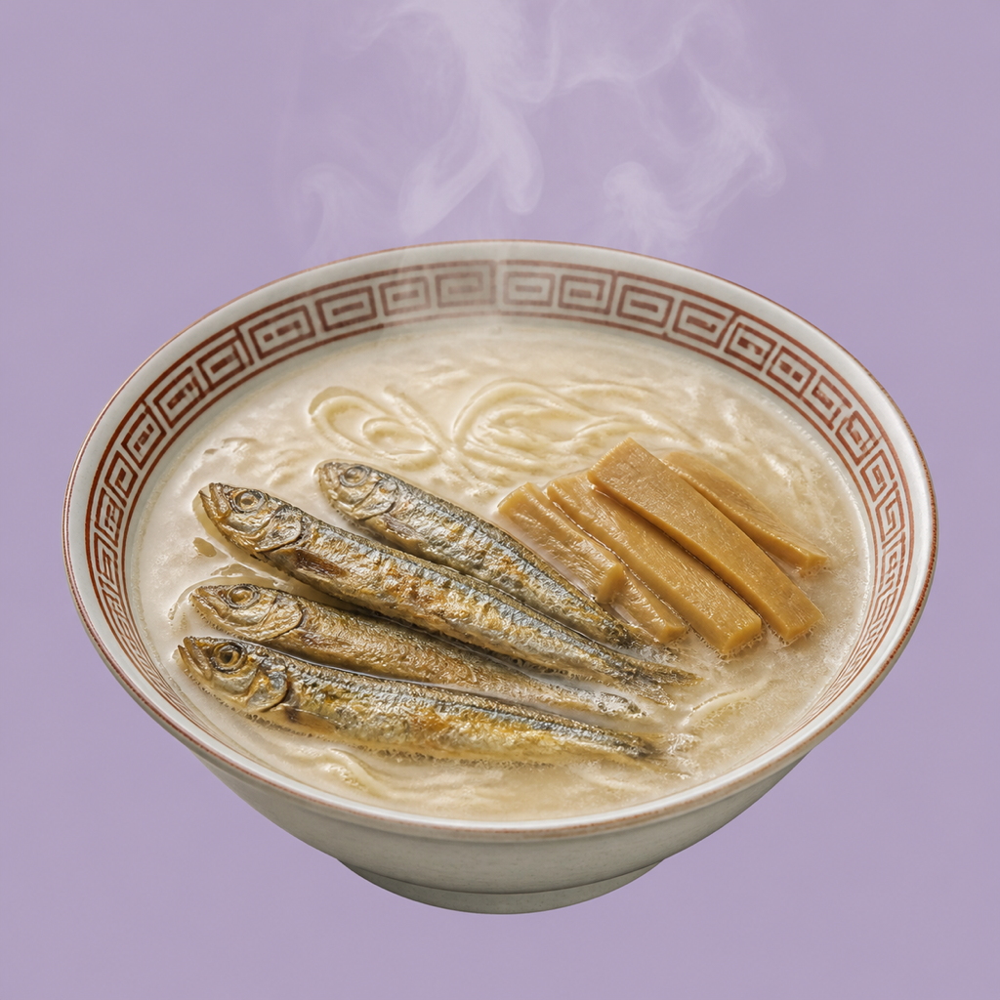
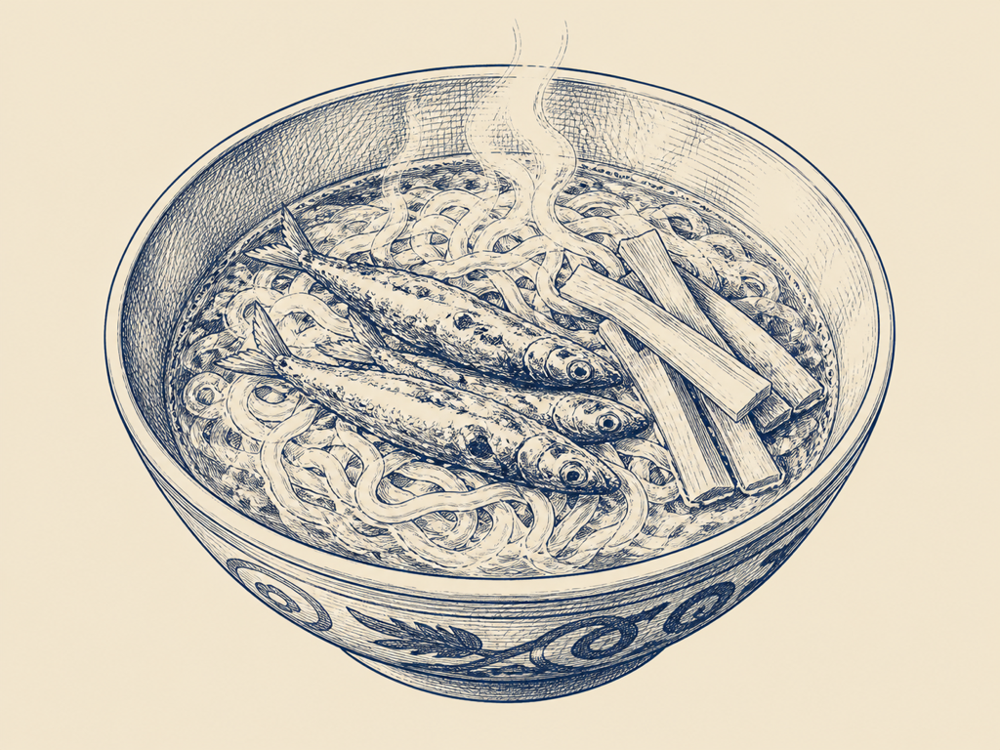
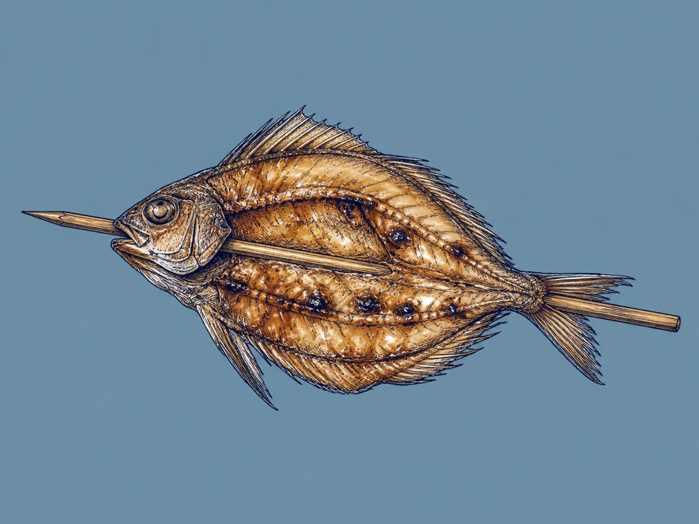
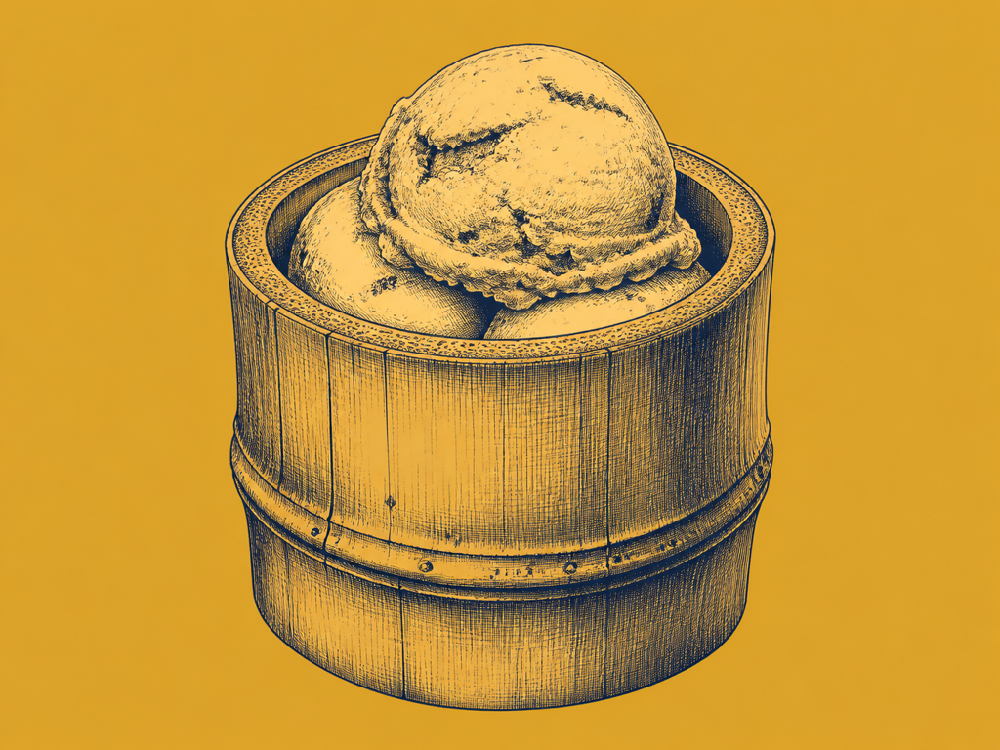
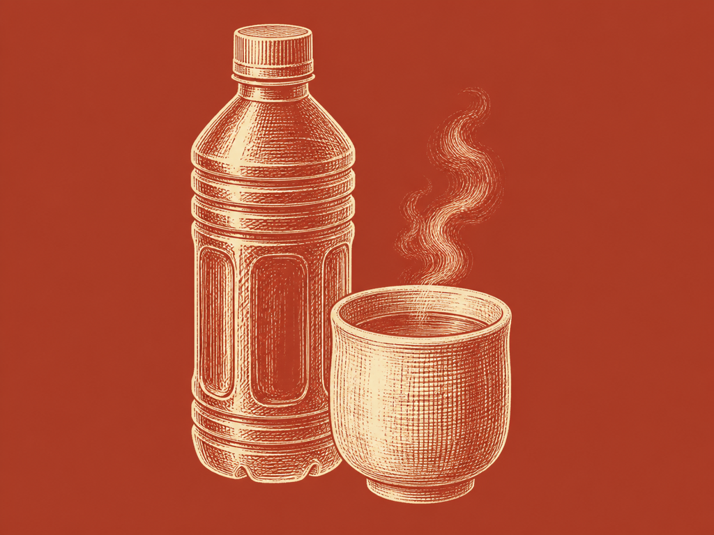

SCROLL — 雑魚、丼へ。
雑魚ではない。
日本の釣り文化を支えた魚たちを
詰め込んだ、極上の一杯。

SCROLL — 雑魚、丼へ。

¥1,200
三陸漁師直送の未利用魚を使った魚介ラーメン。スープはアラを炊いた魚介100%。出汁の香りを活かす中細麺に、チャーシューの代わりの雑魚の姿揚げ、竹の種類ごとに味わいの異なる国産メンマ。名前の通り、丼の上は雑魚の祭り。

¥500
利根川水系に伝わる小魚の串焼き「雀焼き」。開いて串に打った姿が雀に似ることからの名と伝わる地域魚食を、釣り人に馴染みのある小型淡水魚や「雑魚」と呼ばれながら地域の食文化に生きる魚で仕立てる。甘辛ダレを電気グリラーで香ばしく。

¥500
いま注目のプラントベースアイス。使うのは、和竿の材として日本の釣り文化を支えてきた「竹」。乳製品不使用のカップアイスを、魚の一杯のあとの口直しに。

¥200–300
緑茶（冷）・ほうじ茶（温）・ミネラルウォーター。魚の出汁に、日本の茶を合わせる。未開封のまま提供します。
ABOUT
和竿を中心に、日本の釣り文化と地域文化を探索する活動体。竹の釣竿という忘れられかけた道具を現代の釣りに引き戻すことから始まり、竿師の工房を訪ね、産地の竹を学び、世界でひとつの竹製ルアーロッドを現代のアングラーに届けてきた。掲げる言葉は「釣りに、情緒を」。魚が釣れたかどうかだけでは測れない、釣りという行為そのものの豊かさを扱っている。
道具も情報も均質になっていく釣りシーンの中で、探してきたのは日本の各地域で培われてきた固有の釣り文化だ。地域の釣法、地域の道具、そして地域の魚食——釣りをめぐる文化の全体を、フィールドワークと制作の両輪で掘り起こし、発信してきた（BRUTUS等メディア掲載多数）。
釣りフェスには事業者ブースで2022年より5年連続出展。毎年、空間ごと自分たちの手で作り込み、スローガン「なんなら釣れなくていい」を掲げて、釣果だけではない釣りの楽しみを見せてきた。6年目の今年、釣具の列を離れて食の小間に立つ。雑魚の一杯は、その探索の最新号にあたる。
GALLERY — 釣りフェス出展のあゆみ


DRAG →